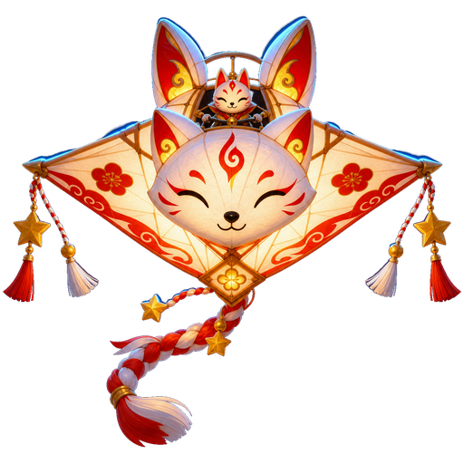

Day 022 · 3D/hoshi/
Score0
Best0
Kite hearts◆◆◆
Tension18%
Combo×1.0
Altitudemid
Time0:00
First Star Thread
Hoshi Nebuta Kite Cartographer
Trace 4 gold stars, bank at Beacon A, finish below 65% tension.
Gold → Gold → Gold → Gold
thread 0/1
Beacon A waiting
Kitsune Gust 0%

Press Start: glide toward the first gold star, then bank at Shrine Beacon A.
Visual wind/tension cues remain playable when muted.
Hoshi Sky Map Complete!